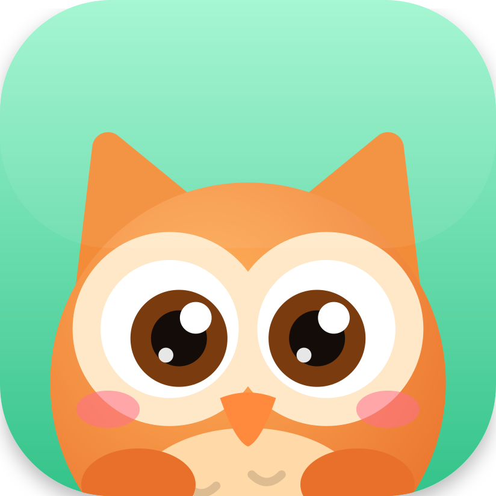

HootleHootle support
Help with the menu bar owl that keeps your Mac awake.
Using Hootle
How do I turn it on and off?
When the owl's eyes are closed, click it once and it wakes up. Your Mac now stays awake. When its eyes are open, click it to see options: Turn Off Now, or turn off after 15 minutes, 30 minutes, 1 hour, 2 hours or 4 hours.
How can I tell if it's on?
Awake: the owl's eyes are open, it blinks, looks around and now and then waves or hops. Asleep: its eyes are closed and small z's float up. Your Mac is back to its normal sleep settings.
Why did it hoot and ask "Anyone there?"
Hootle checks in once if it has been on for 2 hours and nobody has used the keyboard, mouse or trackpad for 10 minutes. Choose Keep On to carry on, or Turn Off to let your Mac sleep. If you ignore it, it goes away 30 seconds after you start using the Mac again.
Where did the owl go? How do I quit?
Hootle lives in the menu bar at the top right of the screen, not in the Dock. If your menu bar is crowded, the owl may be hidden behind the camera notch; try closing other menu bar apps. To quit, click the owl while it's awake and choose Quit Hootle, or press ⌘Q while the menu is open.
Can Hootle start when I log in?
Yes. Open System Settings → General → Login Items, click + under "Open at Login" and choose Hootle. It starts awake each time.
Troubleshooting
My Mac still went to sleep
Closing the lid of a MacBook always puts it to sleep unless an external display, keyboard and power are connected. This is a macOS rule that no app can override. Your Mac may also sleep if the battery runs very low. Choosing Sleep from the Apple menu works as usual too.
My screen still locked
Hootle stops the screen from locking due to inactivity. Locking it yourself, with ⌃⌘Q, a hot corner or by closing the lid, still works as normal.
I can't hear the hoot
The hoot plays through your Mac's normal sound output at a soft volume. Check that your Mac isn't muted and that the volume is up.
How do I uninstall it?
Quit Hootle, then drag it from the Applications folder to the Trash. It leaves nothing else behind.
Privacy
Hootle collects no data and makes no network connections. Read the privacy policy.